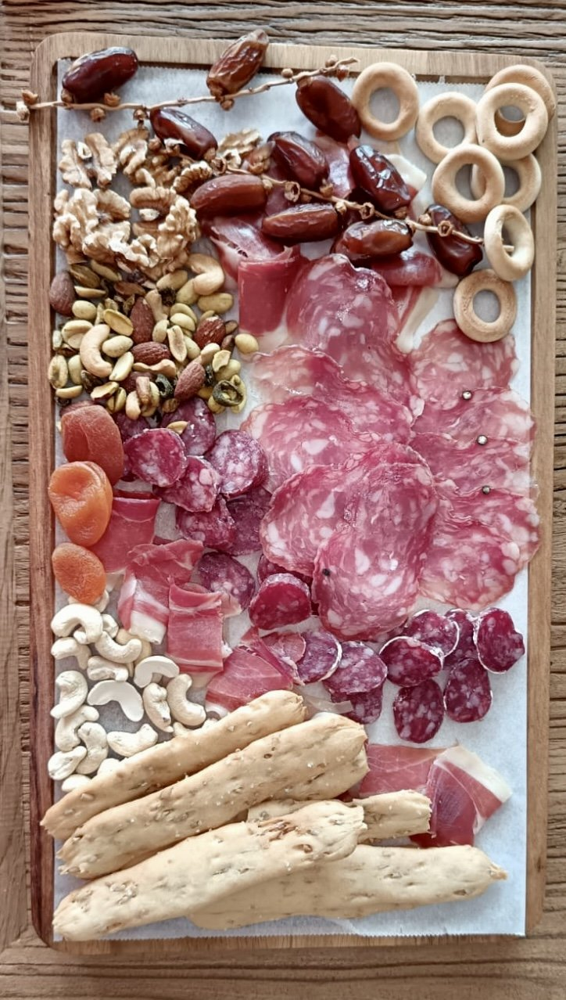

Comida tradicional
alicantina
‹ Todas las recetas
Tabla de ibéricos

Ingredientes
Jamón ibérico
Salchichón ibérico
Chorizo ibérico en rodajas
Dátiles
Orejones
Nueces
Anacardos
Frutos secos variados
Rosquilletas
Colines o palitos de pan
Preparación
Montar.
Sobre una
tabla de madera
con papel de horno, colocar los
embutidos
en el centro y rellenar los huecos con la
fruta seca
, los
frutos secos
, las
rosquilletas
y los
colines
. Si hay que llevarla, se tapa con film.